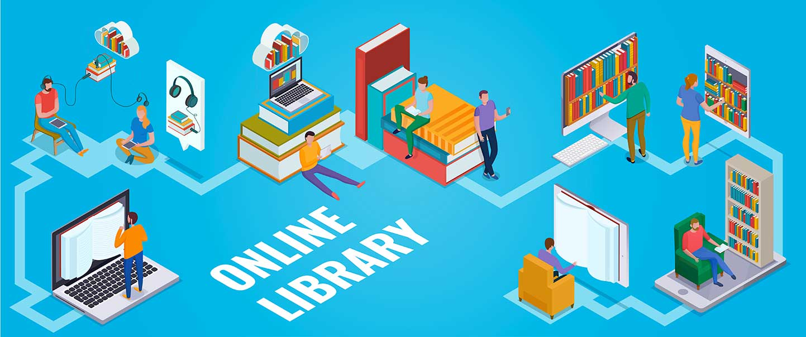
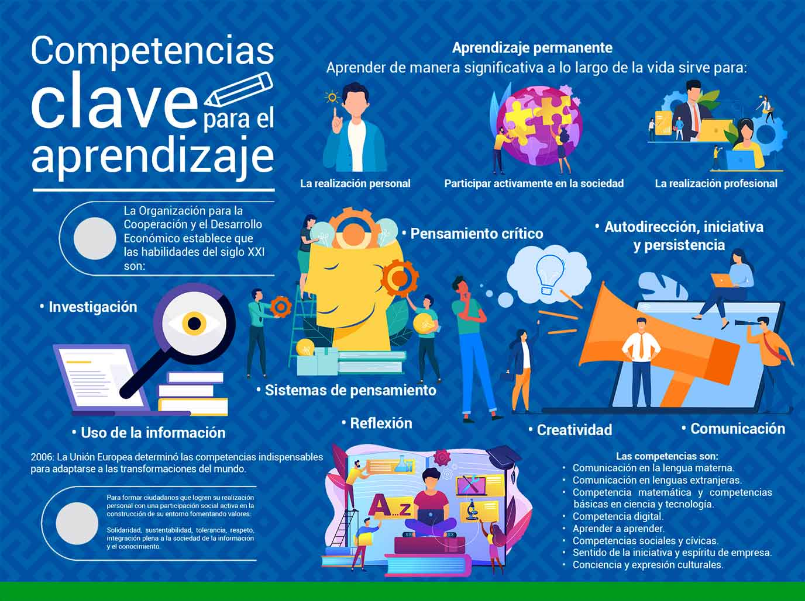
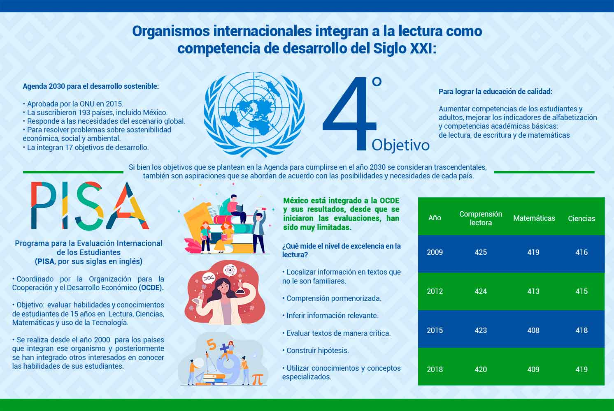

El estudiante identifica el significado de leer en nuestros días y
su importancia a nivel global, justificando la necesidad de formar
lectores en el país, dados los bajos niveles de lectura que reportan
para México los organismos nacionales e internacionales.
[1]
Introducción
[2]
La tecnología ha transformado las formas de
comunicación y, por lo tanto, la manera en que se
relacionan los individuos con los textos.
¿Cuáles son las diferencias entre leer y
escribir en impreso y en digital?
Hoy se habla mucho de la importancia de leer. Incluso, organismos
internacionales y dependencias de educación y cultura de
todos los países en todo el mundo han asumido el compromiso
de fomentar la lectura. ¿Por qué la
importancia de integrar la competencia lectora en la
sociedad? Y en México, ¿cómo son las
prácticas de lectura de sus habitantes? ¿Se puede
hacer algo para cambiar la situación imperante?
En este primer módulo se pretende dar respuesta a estas
preguntas. Lo más importante es descubrir cómo hacer
de la lectura un acto disfrutable y cómo seducir a otros a
través de la emoción que se experimenta con los
textos.
Argüelles, J. D. (2014).
Historias de lectores y lecturas: los caminos de los
que sí leen. Océano.
Cordón García, J. A. (2019). La lectura
académica en el entorno impreso y digital:
contextos, disrupciones y canon. En Ramírez, E.
(ed.).
De la lectura académica a la lectura
estética, pp. 17-34. IIBI-UNAM.
Diez, C. (2013). Yo como lector. En:
Jóvenes lectores, caminos de
formación. Uruguay: Ministerio de Educación y
Cultura/CERLALC.
Garrido, F. (2005). La necesidad de entender.
Grupo Editorial Norma.
IIPE UNESCO América Latina. (2019, 6
septiembre). La Agenda 2030 y el planeamiento de la
educación
[Video]. YouTube.
https://youtu.be/XrvCoUmsBuk
Jarvio, A. O. (2019). Lectura académica y lectura
de literatura en la comunidad de la Universidad
Veracruzana. En Ramírez, E. M.
De la lectura académica a la lectura
estética
(pp. 139-156). IIBI-UNAM.
1.1 Definiendo qué es leer y la evolución de la lectura y la
escritura
Antes de entrar de lleno a los temas de este módulo, se comparte
una lectura gratuita contenida en el siguiente video; el objetivo
es que el lector la disfrute, que fije su atención en la historia
y en cómo se usan las palabras para contarla:
Para continuar con el tema, es preciso plantear las siguientes
interrogantes: ¿Por qué es importante leer y por
qué hay tantas personas que dicen disfrutar de la lectura,
sobre todo de la lectura de literatura, y de los libros? Y
si leer es maravilloso, ¿por qué hay tan pocos
lectores?
Para responder el cuestionamiento anterior, Garrido (2004),
conocido promotor de la lectura en México, establece
que la lectura auténtica es una actividad para regocijarse;
dice que es como un juego. Recalca que sólo
“hace falta que alguien nos inicie y que juegue con
nosotros, que nos emocione y nos explique las reglas” (p.
35). Veamos lo que expresa a través del
siguiente video:
Referencia: ¡Chócalas! (2020, 11 mayo). Entrevista a Felipe Garrido 5/6 [Video]. YouTube.
Finalmente, y como complemento de lo anterior, se sugiere analizar
los siguientes textos que muestran una visión de lo que significa
leer por placer:
Garrido, F. (2004). El buen lector se hace, no nace. Ediciones del sur.
https://bit.ly/39ikP59.
Argüelles, J. D. (2009). Si quieres... lee: Contra la obligación de leer y
otras utopías lectoras. Fórcola.
Para localizar este libro, deberás:
Acceder a
https://www.uv.mx/bvirtual/
En esta biblioteca podrás encontrar una gran variedad de
obras gratuitas.
Ingresa con tu cuenta de estudiante a libros
electrónicos.
En la opción de búsqueda avanzada, teclea el
título del libro.
Las habilidades que se desarrollan al leer son un resultado que
forma individuos más competentes en muchos ámbitos
de la comunicación. Y cuando se logra ejercitar el manejo
de las palabras, se puede desarrollar una lectura activa y
reflexiva, una lectura que es necesaria para comprender textos
más complejos, como lo son los de la disciplina que se
está estudiando.

[3]
La lectura ha cobrado un nuevo significado con la irrupción
de la tecnología: se lee y se escribe de forma diferente.
Con la tecnología las posibilidades de lectura
también se multiplican.
El auge tecnológico ha traído cambios tanto en la
forma de leer en papel y como pantalla. Para profundizar al
respecto de lo anterior se cita el siguiente artículo de
Cordón & Jarvio (2015):
¿Se está transformando la lectura y la escritura
en la era digital?
Referencia: Cordón, J. A., & Jarvio, A. O.
(2015). ¿Se está transformando la lectura y la
escritura en la era digital? Revista Interamericana de Bibliotecología, 38(2), 137-145.
Para evaluar tus aprendizajes acerca del tema:
Definiendo qué es leer y la evolución de la
lectura y escritura,
dirígete a la sección de
Actividades e
ingresa a la
Actividad 1,
atendiendo las indicaciones para su realización.
Actividad 1. Definiendo qué es leer y la evolución de la
lectura y escritura.
Descripción:
A partir de los análisis que consideran Garrido (2004) y
Argüelles (2011), que se revisaron en el tema 1.
Definiendo qué es leer y la evolución de la
lectura y escritura,
integra una definición propia de lo que es leer.
Revisa el artículo de: Cordón, J. A., &
Jarvio, A. O. (2015). ¿Se está transformando la
lectura y la escritura en la era digital? Revista Interamericana de Bibliotecología, 38(2), 137-145.
http://eprints.rclis.org/25151/1/RIB%2038-2%20art.%203.pdf, y examina las características de los diversos soportes
de lectura para formular cómo ha evolucionado la lectura
y la escritura hasta nuestros días.
Con lo anterior, elabora un
ensayo de un mínimo
de tres cuartillas en el que se establezcan los elementos
más distintivos de lo que significa leer, su importancia
en nuestros días y su evolución.
La citación y la escritura de referencias debe ser con base en el Manual de Publicaciones de la APA, 7ª. ed., para ello consulta la siguiente página: Sánchez, C. (2020, 24 noviembre). Normas APA. 7a. edición. Normas-apa.org. Blog. https://normas-apa.org/. También puedes descargar el manual en formato PDF directamente desde: https://normas-apa.org/wp-content/uploads/Guia-Normas-APA-7ma-edicion.pdf
Criterios de desempeño:
Redacción clara y precisa referente al tema.
Pertinencia respecto de los autores citados.
Argumentación de las ideas que se expresen.
Citar y escribir las referencias correctamente de acuerdo con
las normas del
Manual de Publicaciones de la APA (7a. ed.).
Lineamientos de entrega:
Titula el archivo de la siguiente forma: Act1_PrimerApellidoyPrimerNombre. Ejemplo: Act1_VillanuevaMariaTeresa
Envía tu archivo, en formato PDF, a través del
apartado Actividades de la plataforma Eminus, a más
tardar en la fecha establecida en el Calendario de entregas.
1.2 Determinar el papel que juega la lectura en nuestra sociedad
Para el abordaje de este tema, es importante identificar por
qué diversos organismos internacionales consideran a la
lectura como competencia indispensable de desarrollo.
Competencia clave (Unión Europea).
Agenda de Sustentabilidad 2030.

[4]
En México se lee poco y es necesario plantear el siguiente
cuestionamiento: ¿Se conoce cómo y cuánto es que se lee? Para
ello, a continuación se localizan los resultados de estudios
nacionales e internacionales que reportan las prácticas de lectura
en México, lo que permite entender la importancia de formar
lectores.

[5]
Para evaluar tus aprendizajes acerca del tema:
Determinar el papel que juega la lectura en nuestra
sociedad, dirígete a la sección de
Actividades e
ingresa a la
Actividad 2,
atendiendo las indicaciones para su realización.
Actividad 2. Determinar el papel que juega la lectura en nuestra
sociedad.
Descripción:
Elabora un
texto argumentativo sobre
lo que establece la Unión Europea acerca de las
competencias clave, así como lo establecido por la OCDE
sobre las habilidades del siglo XXI.
Valora el Objetivo 4 de la
Agenda 2030 para la Sustentabilidad y las
características más importantes de la
evaluación PISA de la OCDE
. Determina el papel que juega la lectura en nuestra
sociedad.
Analiza los resultados de los estudios PISA y MOLEC del INEGI
sobre la lectura en México y justifica por qué es
importante formar lectores.
Para realizar el texto argumentativo, revisa las siguientes
fuentes: Si lo consideras necesario, puedes realizar
búsqueda de información para enriquecer tus
comentarios.
Titula el archivo de la siguiente forma:
Act2_PrimerApellidoyPrimerNombre. Ejemplo:
Act2_VillanuevaMariaTeresa
Envía tu archivo, en formato PDF, a través del
apartado Actividades de la plataforma Eminus, a
más tardar en la fecha establecida en el
Calendario de entregas.